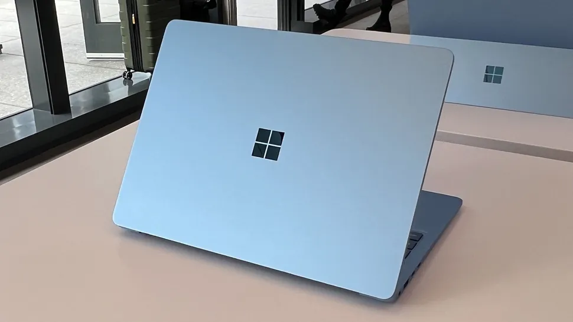

2. Microsoft Surface Laptop 7
*Microsoft's MacBook-killer is finally here
- If you’d asked us last month what the best laptop of 2024 so far is, we'd have said the MacBook Air (M3). But a lot can change in the world of laptops, and since then we’ve seen an influx of brilliant Windows 11 laptops powered by the new Snapdragon X chips from Qualcomm. These ARM-based chips offer similar benefits to Apple’s M3, and we’ve been blown away by the performance and battery lives of the models we’ve tested so far.
- Of this new generation of Windows 11 laptops, Microsoft’s own Surface Laptop 7 is the one that impressed us the most – so much so that it’s our pick as the best laptop of 2024 so far. That’s right, Microsoft has finally come up with a MacBook-killer after years of trying and failing. In our Microsoft Surface Laptop 7 review, we were particularly impressed with its performance and battery life.